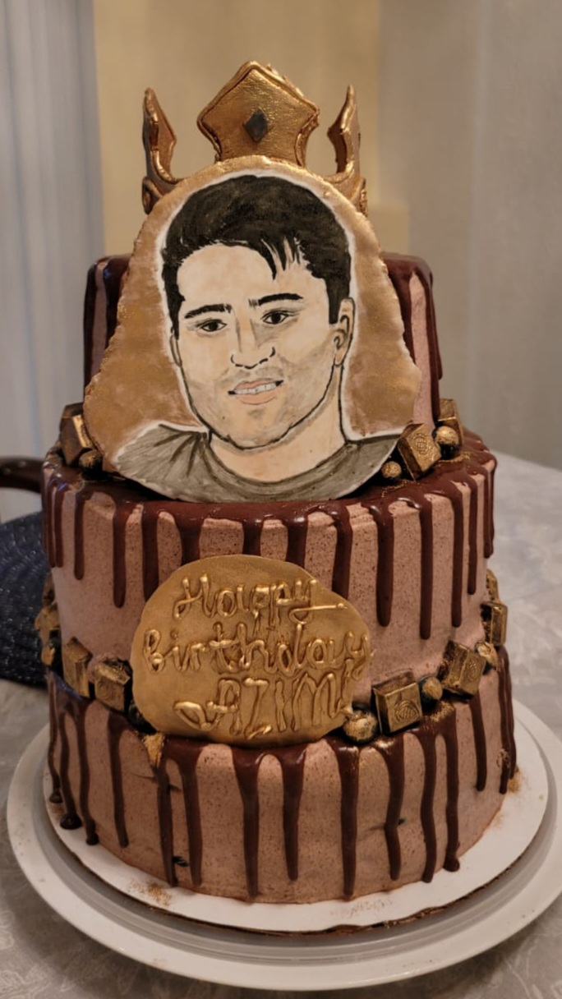
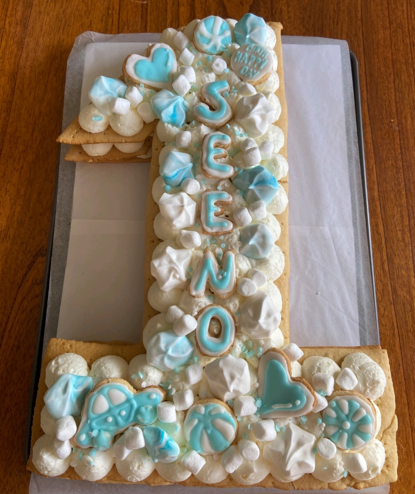
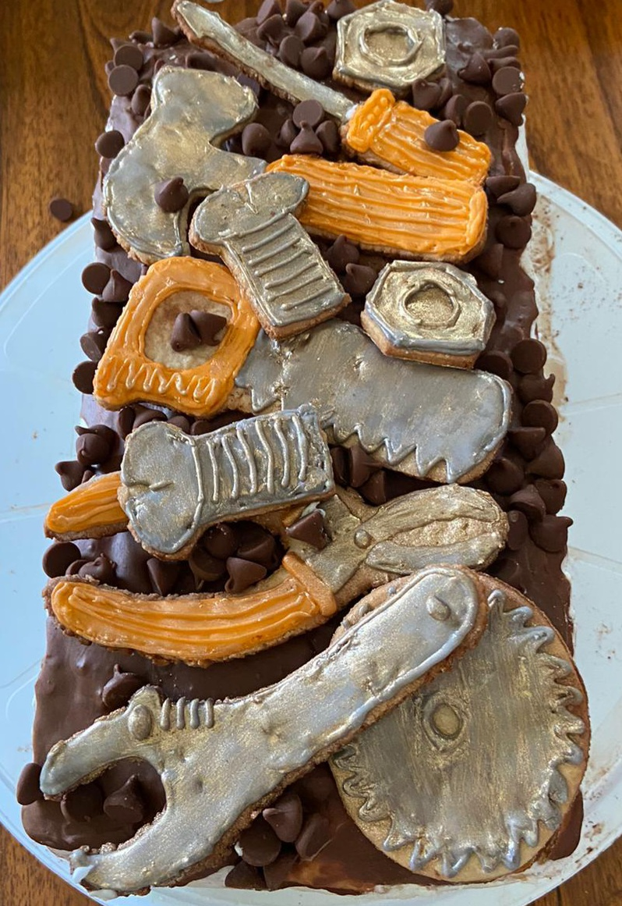

Picture on Cookies



Ingredients:
- 250-300 gr flour
- 100 g butter at room temperature
- 100 gr sugar (can be brown)
- 1 egg
- 2 tbsp honey
- 0.5 teaspoon of soda
- 2 teaspoons ginger
- 1 tsp cinnamon
Direction:
- In a saucepan put egg, sugar,cinnamon, ginger, honey and butter (not margarine and not spread!). Place over medium heat and heat, stirring constantly, until the sugar has completely dissolved and the butter has melted. Add 1 full tsp. soda. Rinse quickly. The mass increases slightly in volume and brightens. Remove from heat and consume sifted flour.
- At this stage, the dough is quite sticky. But it shouldn't be liquid! Now the dough should be left on the kitchen table for 10 minutes - "rest" and "ripen". If even after this time the dough sticks strongly to your hands and the table, add a little flour, no more than 50 g, otherwise the dough will turn out to be too dense and it will be very difficult to roll out into the desired shape and bake at 400F for 5-7 minutes.
- To get a smooth, shiny glaze, we will mix powdered sugar, lemon juice (3 teaspoons) and 1 tablespoon of water in a cup. At first it may seem that there is not enough liquid for such an amount of powder, but this is an excellent combination obtained by experience. Lemon juice adds a pleasant acidity and shine. It is better to mix the glaze with a silicone or wooden spatula. At the end, add dye, according to the instructions. Now we transfer the icing for our gingerbread cookies into a culinary bag. I use a regular food bag. I make a rounded cut on the upper part, and after filling the bag with icing, at the tip, from where the icing will be squeezed out, I make an incision of 1.5–2 mm with scissors. Now we begin the creative process - coating each gingerbread cookie with sugar icing.